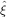
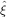
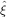
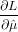
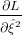
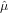
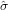
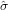

and  2 for these two parameters can be obtained by
maximising the likelihood l:
and  2 for these two parameters can be obtained by
maximising the likelihood l:
Assume that the ages (or the logarithm of the ages) come from a normal distribution of the form
|
| (2) |
where μ denotes the mean and ξ2 is the amount of overdispersion, i.e. the excess scatter that cannot be explained
by the analytical uncertainty alone. Unbiased estimates and  2 for these two parameters can be obtained by
maximising the likelihood l:
 | (3) |
or, more conveniently, the log-likelihood L ≡ log(l):
![n [ ]
L = - 1 ∑ (ti --ˆμ)2+ ln(σ2+ ˆξ2)+ ln(2π)
2 i=1 σ2i + ˆξ2 i](MLEpaper35x.png) | (4) |
Calculating the derivatives of L with respect to  and
and  2 and setting them to zero to find the maximum
likelihood:
2 and setting them to zero to find the maximum
likelihood:
 = ∑
i=1n = 0 = 0 | (5) | |
 = ∑
i=1n![[ ]
-(ti --ˆμ)2 - --1----
(σ2i + ˆξ2)2 σ2i + ˆξ2](MLEpaper311x.png) = 0 = 0 | (6) |
which can be solved iteratively for  and  2. The variance μ2 of the weighted mean
2. The variance μ2 of the weighted mean  is given by the inverse of
the Fisher Information, i.e. the negative expected value of the second derivative of the log-likelihood function with
respect to
is given by the inverse of
the Fisher Information, i.e. the negative expected value of the second derivative of the log-likelihood function with
respect to  :
:
 | (7) |